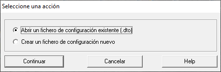

Después de ser ejecutado por primera vez, este programa se puede lanzar de dos modos:
- Lanzamiento haciendo doble click en el enlace directo creado en el Escritorio.
Se presentará el siguiente formulario, para que el usuario pueda "Crear" un fichero nuevo de configuración, o "Abrir" uno ya existente.

- Si se elige "Abrir un fichero existente" se presentará el formulario para selección de un fichero de configuración, abierto en el subdirectorio "Escritorio/DesktopOrganizer_files" donde habitualmente se crean estos ficheros. Sin embargo, el usuario es libre de especificar cualquier otro fichero "*.dto" que esté en cualquier otro directorio.
- Si se elige "Crear un fichero de configuración nuevo" también se presentará el formulario para introducir el nombre del nuevo fichero. Ver "Creación de un fichero de configuración".
- Lanzamiento haciendo doble click sobre cualquier fichero con extensión "*.dto"
En este caso se abrirá directamente dicho fichero, en modo "Vista estandar".